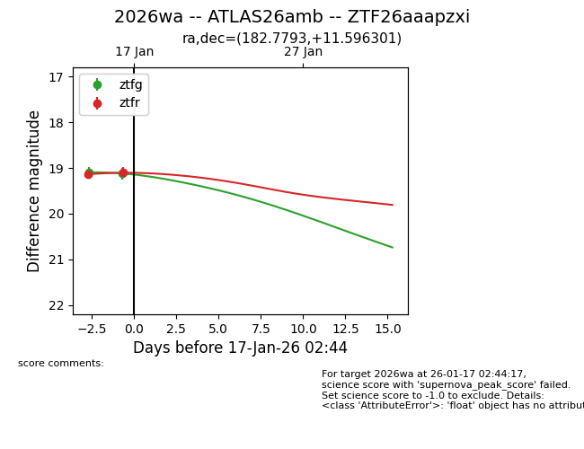
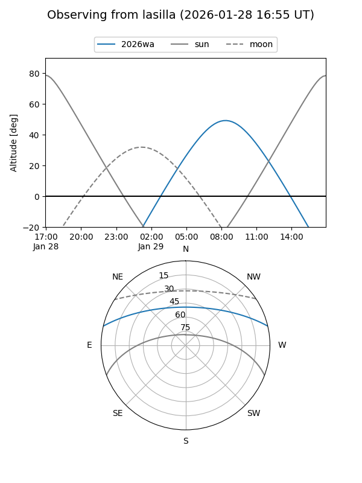
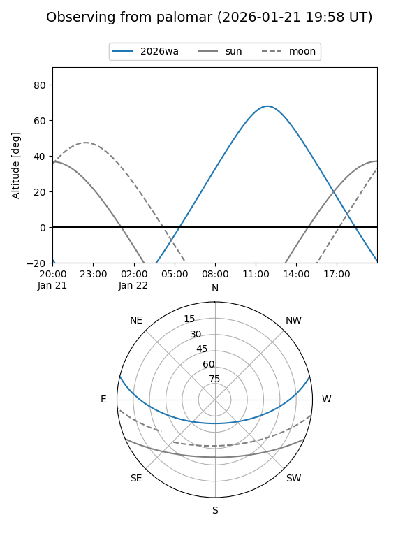
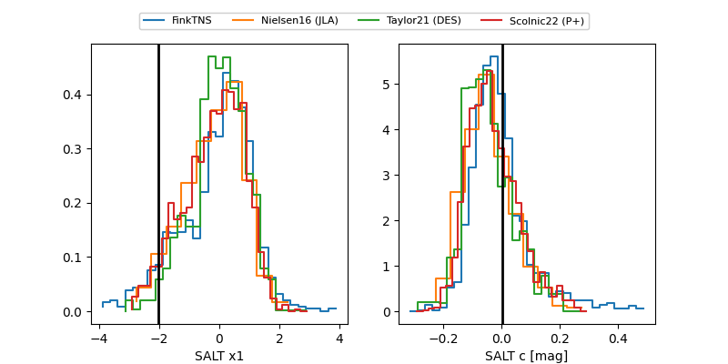

2026wa
Target 2026wa at 2026-01-23 18:31
Aliases and brokers:
FINK: link
Lasair: link
ALeRCE: link
TNS: link
YSE: link
alt names
ZTF26aaapzxi (ztf,fink_ztf)
2026wa (tns,yse)
ATLAS26amb (atlas)
Coordinates:
equatorial (ra, dec) = 182.7793,+11.59630
equatorial (HMS+DMS) = 12:11:07.03,+11:35:46.69
galactic (l, b) = (269.6185,+71.80945)
Flags:
Photometry:
last ztfg=19.24, ztfr=19.17
4 ztfg, 4 ztfr detections
Lightcurve

Visibility


Additional plots
